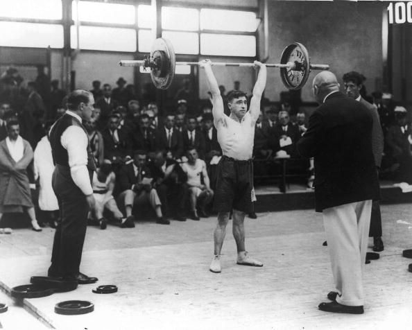
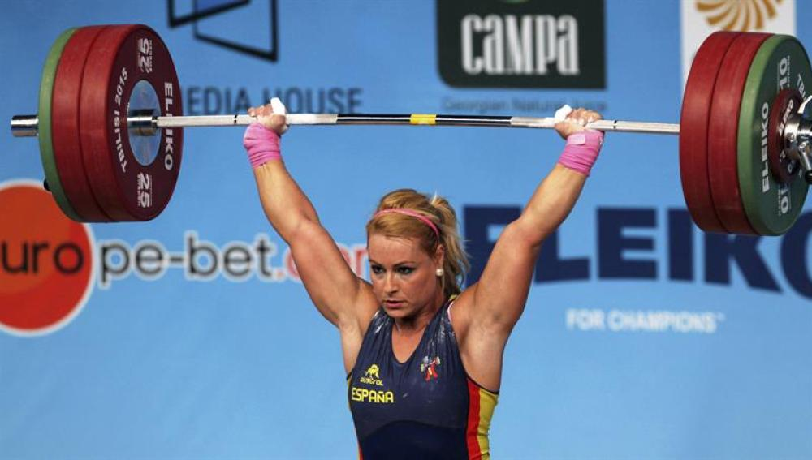
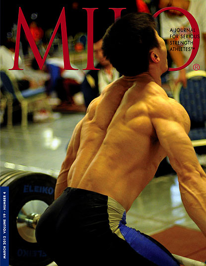
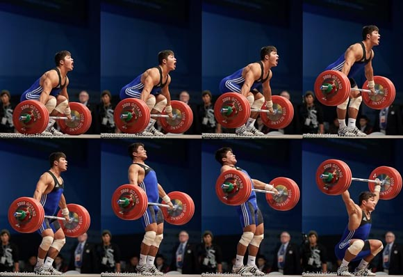
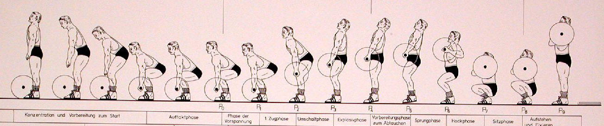
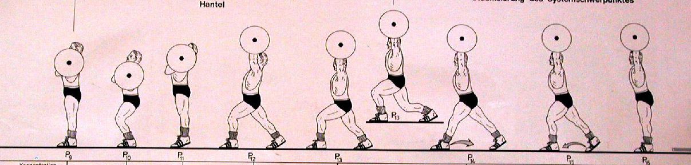

HALTEROFILIA
La halterofilia es probablemente uno de los deportes más antiguos. Podemos situar sus orígenes en torno al año 3600 a. C. en China, allí los emperadores practicaban ejercicios de fuerza. También en la dinastía Chow (1122 a. C.) los soldados, como requisito para formar parte del ejército, tenían que levantar una serie de pesos. Los antiguos griegos llevaban pesas en las manos al practicar el salto de longitud, en la creencia de que les permitían conseguir saltos más largos; de hecho, la palabra "haltera" es de origen griego y pertenece a la raíz del verbo "saltar" (en griego antiguo "hallomai", en latín "saltare"). La mayoría de los historiadores apuntan al luchador griego Milón de Crotona como el pionero del levantamiento de pesas.
OLIMPIADAS MODERNAS
En la primera Olimpiada Moderna, celebrada en Atenas en 1896, la halterofilia fue incluida como deporte olímpico. Se destacó el inglés Launceston Elliot que levantó, con una sola mano, 71 kg. En París en 1900 no se celebró competición. En los Juegos Olímpicos de Sant Louis 1904, el griego Pericles Kakousis logró levantar 111,67 kg. Posteriormente se sucedieron ocho años sin levantamiento, y volvió a incluirse en Amberes en 1920. Los participantes ya se dividieron en categorías según su peso: pluma, ligero, medio, semipesado y pesado. En 1928 en Ámsterdam se instituyeron tres modalidades: arrancada, desarrollo y tiempo. Más tarde en Múnich 1972 se introdujeron nuevas categorías de peso: mosca y súperpesado. Actualmente se compite en dos modalidades: arrancada y dos tiempos.

ACTUALIDAD
En la primera Olimpiada Moderna, celebrada en Atenas en 1896, la halterofilia fue incluida como deporte olímpico. Se destacó el inglés Launceston Elliot que levantó, con una sola mano, 71 kg. En París en 1900 no se celebró competición. En los Juegos Olímpicos de Sant Louis 1904, el griego Pericles Kakousis logró levantar 111,67 kg. Posteriormente se sucedieron ocho años sin levantamiento, y volvió a incluirse en Amberes en 1920. Los participantes ya se dividieron en categorías según su peso: pluma, ligero, medio, semipesado y pesado. En 1928 en Ámsterdam se instituyeron tres modalidades: arrancada, desarrollo y tiempo. Más tarde en Múnich 1972 se introdujeron nuevas categorías de peso: mosca y súperpesado. Actualmente se compite en dos modalidades: arrancada y dos tiempos.
 
ARRANQUE
Consiste en levantar la barra desde el suelo hasta por encima de la cabeza con una completa extensión de los brazos en una sentadilla, todo en un solo movimiento. Este ejercicio es el más técnico dentro el levantamiento de pesas.
La barra estará colocada horizontalmente delante de las piernas del levantador. Será agarrada, manos en pronación, y alzada en un solo movimiento desde la plataforma hasta la completa extensión de ambos brazos verticalmente sobre la cabeza, mientras se desplazan las piernas en tierra o se flexionan. La barra pasará con un movimiento continuo a lo largo del cuerpo, del cual ninguna parte, a excepción de los pies, puede tocar la tarima durante la ejecución del levantamiento.
La extensión (hacia atrás) de la muñeca no deberá efectuarse hasta que la barra haya sobrepasado la cabeza del levantador.
El levantador puede recuperarse utilizando el tiempo que necesite del split o squat y colocar los pies en la misma línea, paralelos al plano de su tronco y de la barra. El juez dará la señal tan pronto como el levantador esté totalmente inmóvil en todas las partes de su cuerpo. El peso levantado debe ser mantenido en la posición final de inmovilidad, permaneciendo los brazos y piernas extendidos. Los pies en la misma línea, paralelos al plano de su tronco y de la barra, hasta que el juez dé la señal de “tierra”.
La señal de tierra debe ser audible y visible y debe estar colocada al lado del juez central (frente al levantador).

ENVION
Este ejercicio consiste en levantar la barra desde el suelo hasta los hombros con una sentadilla. Posteriormente se recupera en posición de pie, para iniciar la segunda fase denominada jerk, realizando una flexión de las piernas empujando la barra por encima de la cabeza con una tijera al mismo tiempo, posteriormente se recupera colocando lospies en paralelo para poder descender la barra al suelo.
Hay dos fases diferentes en este movimiento: en la primera (clean o cargada), el competidor levanta la barra desde el suelo realizando un tirón y sentadilla para colocarse bajo la misma. Luego se levanta erguido sujetando la barra a la altura de los hombros; en la segunda (jerk o envión), doblando mínimamente las rodillas, levanta la barra por encima de la cabeza, tomando impulso con las piernas y extendiendo los brazos por completo. El levantador debe mantener los pies en el mismo plano durante todo el proceso y extender en la segunda fase las piernas completamente.
Hay una variante de la modalidad de dos tiempos (push yerk) en la que está permitido colocar los pies en diferente plano y mantener las piernas flexionadas. La mayoría de los levantadores realizan el segundo movimiento flexionando un poco las piernas y las estiran de repente, provocando un efecto muelle, momento en el que bajan el cuerpo para colocarse debajo de la barra, completando así el levantamiento.

